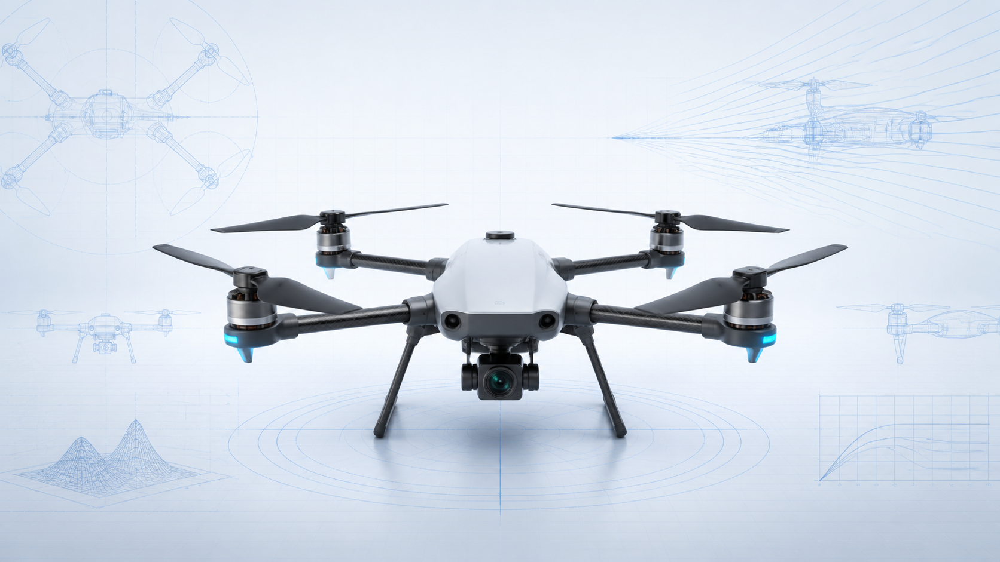

四旋翼对称布局
四个电机在平面内对称分布，结构清爽，适合稳定悬停和姿态解算。
以四旋翼布局、差速控制和飞控链路为主线，做一套结构清楚、工程说明型的技术汇报。

四轴飞行器的核心优势，不在单个部件，而在“结构简单 + 控制灵活 + 维护成本可控”的组合。
四个电机在平面内对称分布，结构清爽，适合稳定悬停和姿态解算。
不依赖跑道，起降空间小，便于在教学、巡检和实验环境快速部署。
通过转速差就能完成滚转、俯仰和偏航控制，响应直接，控制链路短。
机架、动力、电源、飞控、传感可分别更换，适合实验迭代。
从航拍、测绘到巡检、集群验证，均可以围绕同一飞行平台扩展。
续航、载荷、抗风性能和安全冗余都受尺寸、电池和控制策略制约。
做工程汇报时，不必先讲姿态方程，先把系统边界讲清楚，评审更容易跟上。
决定结构强度、布局尺寸和整体重量，是平台级约束。
完成电能到推力的转换，并根据飞控指令精确调速。
直接影响升力、噪声与效率，匹配不当会放大振动。
融合 IMU、磁罗盘、气压计等信息，实时求姿态并输出控制量。
GPS、视觉、测距等传感器决定飞行模式与外界感知能力。
续航、安全和载荷三者都会受电源系统限制。
系统图一定要回答三件事：部件是什么、信号怎么走、约束落在哪里。
适合 T3 模板的工程表达习惯
四个桨不是一起用力，而是围绕总升力和力矩分配做差速控制。
四个旋翼共同提供升力，决定起飞、悬停和下降。
左右两侧推力形成差值，让机体绕纵轴旋转。
前后旋翼转速差带来俯仰力矩，改变前进或后退姿态。
顺逆时针旋翼的反扭矩不平衡，会驱动机体水平转向。
把飞行器说清楚，不能只停留在硬件拼装，必须把闭环控制链路讲出来。
IMU、气压计、GNSS 或视觉模块持续采集姿态与位置相关数据。
通过滤波和融合，把噪声观测变成可用的姿态、速度和高度估计。
根据期望轨迹与当前状态偏差，计算姿态环和位置环控制量。
飞控把控制量下发给电调，最终体现为四个电机转速变化。
机体姿态变化后又会回到传感器侧，形成实时闭环。
PID 参数、限幅、失控保护和电源管理决定实际可飞性。
好的工程 deck 不会只说“能做什么”，还会明确“在哪些条件下最合适”。
方便快速搭平台、验证飞控算法和传感器接入。
适合近距离图像获取和小范围路线巡查。
搭配云台或相机模块，可完成轻载荷成像任务。
电池能量密度有限，长航时任务通常需要更大平台或固定翼。
平台越轻，越容易被阵风和外界扰动放大。
桨叶裸露、电池热失控和失联风险都需要硬件与规则双重控制。
“四轴飞行器之所以经典，不是因为它复杂，而是因为它在简单结构里容纳了完整的闭环控制思想。”
场景素材：四轴飞行器词条 + 工程技术类 T3 模板语法